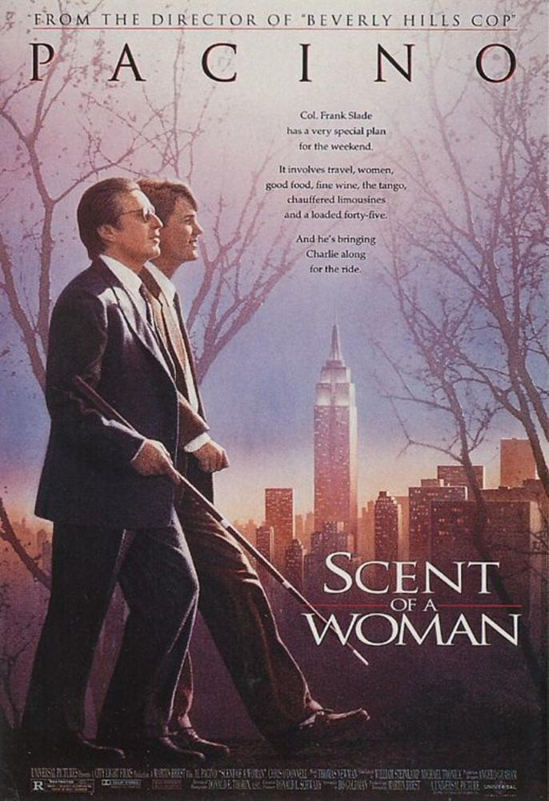

闻香识女人（Scent of a Woman，1992）
一句话短评：史上最美的探戈。
内容简介：
- 查理（克里斯•奥唐纳 Chris O'Donnell 饰）是一个普通的中学生，他因为见证着一件恶作剧但又不想出卖朋友，于是面临着一道艰难的选择题——要么坦白，要么被学校勒退。而史法兰（阿尔•帕西诺 Al
Pacino 饰）是一个退伍军官，因为意外失明，人生从顶点的辉煌滑落谷底。
- 自从两人的人生有了交集，命运的转折慢慢清晰。史法兰打算结束失去了意义的生活，于是在查理的陪伴下，尽情享受着人生最后一趟出行。他吃最美味的佳肴，买光鲜的汽车，在狭窄的街道上飚车，住在豪华的套房里，跟随陌生女子的袅袅香水味，跳一段优雅性感的探戈……极乐的疯狂后，他拿枪对准了自己的头颅。然而，查理声嘶力竭的劝阻改变了一切，曙光亦渐渐在这个老人心中重新升起，二人情深如父子。
-
- 史法兰在学校礼堂激昂演说，挽救了查理的前途，讽刺了学校的伪善。二人在互相鼓舞中得到重生。
短评：
- 1.Pacino成就了这部电影，他的每次出场都使影片散发着夺目的光芒。那段震撼人心的演说，那段迷人的探戈，还有一个盲人肆无忌惮地在空旷的街道开着法拉利……当你对着镜子缅怀青春感叹年华似水时，Al让人相信，时光对他来说只是种更为炉火纯青的化妆，皱纹也可以是种性感。 ——Lan~die
- 2.感谢在我正直感逐渐淡去，灵魂将要枯竭之时候看到这部电影。 ——A-sun* &米姐起飞
可播放资源：
- 爱奇艺视频 VIP免费观看
- https://www.iqiyi.com/v_19rrhwtpa4.html?vfm=m_331_dbdy&fv=4904d94982104144a1548dd9040df241